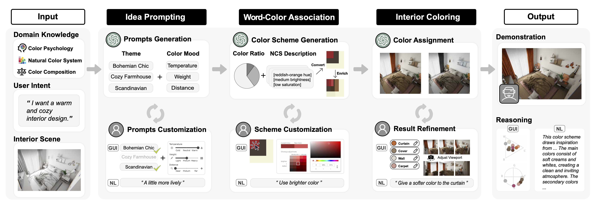

Abstract:
Interior color design is a creative process that endeavors to allocate colors to furniture and other elements within an interior space. While much research focuses on generating realistic interior designs, these automated approaches often misalign with user intention and disregard design rationales. Informed by a need-finding preliminary study, we develop C2Ideas, an innovative system for designers to creatively ideate color schemes enabled by an intentaligned and domain-oriented large language model. C2Ideas integrates a three-stage process: Idea Prompting stage distills user intentions into color linguistic prompts; Word-Color Association stage transforms the prompts into semantically and stylistically coherent color schemes; and Interior Coloring stage assigns colors to interior elements complying with design principles. We also develop an interactive interface that enables flexible user refinement and interpretable reasoning. C2Ideas has undergone a series of indoor cases and user studies, demonstrating its effectiveness and high recognition of interactive functionality by designers.
[Paper]
Video